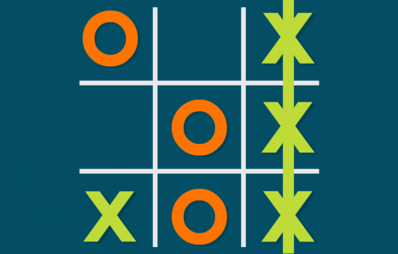
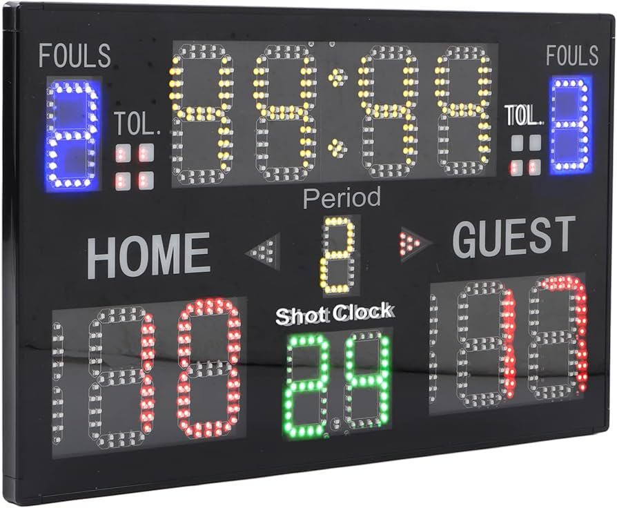

Projects
Please Check Out Some Of My Projects Here:

2048 (Javascript, CSS, HTML)

Utilizing JavaScript, CSS, and HTML, I embarked on the creation of my rendition of the classic game 2048.
Inspired by the original concept, I aimed to blend sleek design with intuitive gameplay mechanics.
Leveraging JavaScript for the game logic, CSS for visually appealing aesthetics, and HTML for structuring the layout,
I meticulously crafted an engaging user experience. Through this project, I honed my skills in front-end development, m
astering the art of combining code and creativity to bring a timeless game to life in the digital realm.
AI Chatbot (Python, NLTK)

I crafted a Python chatbot using NLTK for natural language processing.
Through Python's flexibility and NLTK's tools, I created an interactive
conversational agent capable of understanding and responding to user inputs.
This project honed my Python skills and deepened my understanding of NLP algorithms,
paving the way for future AI endeavors.
Fitness Tracker (Python, .txt)

I developed a fitness tracker using Python and text files for data storage.
By leveraging Python's versatility, I designed a robust tracker capable of
recording and analyzing fitness data efficiently. Utilizing text files for
data storage ensured simplicity and accessibility. This project not only
strengthened my Python skills but also provided valuable experience in data
management and analysis for fitness tracking purposes.
Expense Tracker (Python, Matplotlib)

Tic-tac-toe, noughts and crosses,
or Xs and Os is a paper-and-pencil
game for two players who take turns
marking the spaces in a three-by-three
grid with X or O. The player who succeeds
in placing three of their marks in a horizontal,
vertical, or diagonal row is the winner.
Weather App (Python, API)

I created a weather app using Python and the OpenWeatherMap API.
Through Python's flexibility and the API's data retrieval capabilities,
I crafted an intuitive app for accessing real-time weather information.
This project allowed me to enhance my Python skills while gaining valuable
experience in API integration and data visualization. By combining Python's
power with live weather data, I developed a practical tool for users to stay
informed about current weather conditions effortlessly.
JCS Web Development (Javascript, HTML, CSS)
I developed a website for Jain Community Services Of Canada (JCSC)
using JavaScript, CSS, and HTML. With JavaScript's interactivity,
CSS for styling, and HTML for structuring content, I created a
user-friendly platform to showcase JCSC's initiatives and services.
This project not only honed my front-end development skills but also
allowed me to contribute to the community by providing a digital presence
for JCSC. Through seamless integration of code and design, I crafted a website
that effectively communicates JCSC's mission and values to its audience.
Personal Portfolio (HTML, CSS)

I developed a website for Jain Community Services Of Canada (JCSC)
using JavaScript, CSS, and HTML. With JavaScript's interactivity,
CSS for styling, and HTML for structuring content, I created a
user-friendly platform to showcase JCSC's initiatives and services.
This project not only honed my front-end development skills but also
allowed me to contribute to the community by providing a digital presence
for JCSC. Through seamless integration of code and design, I crafted a website
that effectively communicates JCSC's mission and values to its audience.
Scoreboard (Python, Matplotlib)

I developed a scoreboard using Python and Matplotlib for visualizations.
With Python's versatility and Matplotlib's powerful plotting capabilities,
I crafted an intuitive scoreboard for displaying game statistics or other data.
This project honed my Python programming skills while providing valuable
experience in data visualization and graphical representation. By combining
Python's scripting capabilities with Matplotlib's plotting functionalities,
I created a versatile tool for visualizing data in a clear and engaging manner.